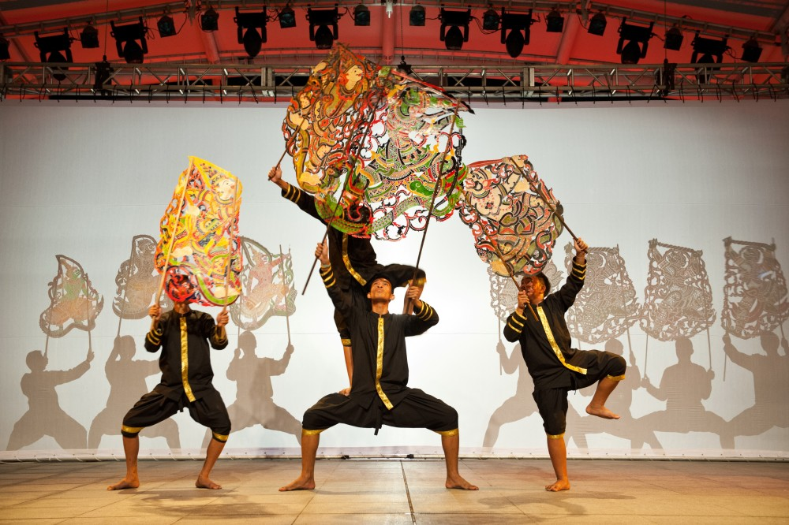

หนังใหญ่วัดบ้านดอน

ศิลปะ ภูมิปัญญา และมรดกวัฒนธรรม หนังใหญ่เป็นศิลปะการแสดงที่มีเอกลักษณ์ของไทย และเป็นมรดกทางวัฒนธรรมที่สะท้อนทั้งฝีมือช่างและศิลปะการแสดง ที่วัดบ้านดอน จังหวัดระยอง มีการอนุรักษ์เรื่องราวเกี่ยวกับหนังใหญ่และตัวหนังที่มีลวดลายละเอียด การสร้างตัวหนังต้องใช้ความประณีตและความชำนาญ การแสดงยังต้องอาศัยผู้เชิด ดนตรี และการพากย์ที่ทำงานร่วมกัน ผู้มาเยือนจึงสามารถเรียนรู้ได้ทั้งเรื่องงานช่าง ศิลปะ ดนตรี และวัฒนธรรม การท่องเที่ยวเชิงวัฒนธรรมในลักษณะนี้ช่วยให้คนรุ่นใหม่ได้รู้จักศิลปะดั้งเดิม และช่วยให้เรื่องราวทางวัฒนธรรมยังคงได้รับการถ่ายทอดต่อไป เว็บไซต์สามารถนำเสนอหนังใหญ่วัดบ้านดอนในหมวด “วัฒนธรรม” และเชื่อมโยงกับถนนยมจินดา สุนทรภู่ หรือสถานที่ทางประวัติศาสตร์อื่น ๆ
back